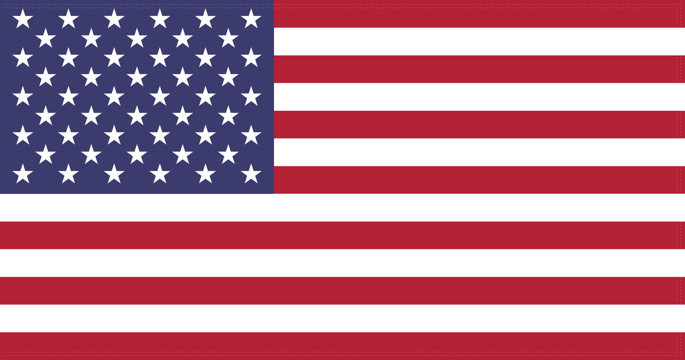

A moment to reflect on the words we share, and the promise of liberty and justice for all.
Classroom presentationA time for reflection

The United States of America
Select the webcam to load a view from the National Park Service.
Devils Tower, WyomingNPS webcam · still images, refreshed every 60 secondsNo webcam image loaded.Credit: National Park Service · Public domain · Camera source
Pledge of Allegiance
With liberty and justice for all.
Ready when your class is.
Music is optional and starts only when enabled. “The Star-Spangled Banner,” instrumental · U.S. Army Band · Public domain.
Read the pledge
I pledge allegiance to the Flag of the United States of America, and to the Republic for which it stands,
one Nation under God, indivisible, with liberty and justice for all.
Stand if able, face the flag, and place your right hand over your heart. Veterans and active-duty service members may salute.
Show etiquette
Stand if you are able.
Face the flag and place your right hand over your heart.
Remove hats unless worn for religious reasons.
Uniformed active-duty and veterans may salute.
This simulator is for civic learning and respectful classroom practice.
Rendered flag: 50 stars · 13 stripes · 10:19 proportions. Flag design follows Executive Order 10834; cloth motion and daylight are illustrative.
Using this presentation
Start the presentation to read the pledge in four measured passages. Pause or restart whenever the class needs more time.
Use Fullscreen to show the flag and words on a classroom display.
Choose a breeze or pause the rendered flag. Music is off until you enable it; reduced-motion settings keep the rendered flag still.
Choose the Devils Tower webcam for a real national-landmark view beside the pledge. It uses still images, not streaming video. Freeze the image or return to the rendered flag at any time. Lighting, weather, camera framing, and delays can affect the view.
Other official landmark webcams
These cameras open on their providers’ websites. They are linked here rather than embedded.
Start a conversation with the Library of Congress’s daily history archive. Choose any date, or return to today.
Loading saved history entries…
Selected article titles and introductory excerpts: Library of Congress, Today in History, with additional original anniversary summaries. Saved entries cover selected dates; other dates request the Library of Congress archive when available. Every date has a direct archive link, including February 29. Dates follow your device’s local calendar.
A short illustrated history · Read, look, question
The American story: promises and possibilities
The United States began as a new republic in a land with a much longer history. Its story includes self-government and invention, slavery and dispossession, and generations of people working to make liberty and justice a reality for more of their neighbors.
Select any image to enlarge it for discussion. Documents and photographs are evidence; later paintings show how an artist interpreted the past.
The American canvas · Public domain collection
History through an artist’s eyes
Step into a river crossing, a harvest, and sweeping landscapes. Select a painting to study it together; use the arrow keys to compare the collection.
⤢ Enlarge painting
Revolution remembered · 1851Washington Crossing the DelawareEmanuel Leutze · Oil on canvas
Leutze painted this dramatic scene in 1851, looking back at the December 1776 crossing. Light, ice, and the crowded boat turn a military maneuver into a story of resolve. This is a later interpretation, not an eyewitness record.
Look closely: How do light and the position of Washington guide your attention?
A changing landscape · 1836View from Mount Holyoke, Northampton, Massachusetts, after a Thunderstorm—The OxbowThomas Cole · Oil on canvas
In The Oxbow (1836), Cole places storm-darkened woods beside cultivated fields in Massachusetts. The contrast invites questions about farming, settlement, and changes to the land.
Look closely: Where does the painting suggest a boundary between cultivated land and woodland?
Mountains and homelands · 1863The Rocky Mountains, Lander's PeakAlbert Bierstadt · Oil on canvas
Bierstadt painted this monumental landscape in 1863 after traveling west. Its dramatic mountains frame a Shoshone encampment. These were Indigenous homelands; the view also reflects ideas that encouraged U.S. expansion.
Look closely: What changes when you look at the people before looking at the mountains?
After the battlefield · 1865The Veteran in a New FieldWinslow Homer · Oil on canvas
Homer painted The Veteran in a New Field in 1865, as the Civil War ended. The discarded Union jacket identifies a soldier returning to farm work. Harvest and the scythe suggest both renewal and loss.
Look closely: Which details make this a painting about war even though there is no battle?
See · Think · Wonder Name a detail you can see. Explain what it makes you think. Ask what another source could help you discover. Paintings reflect choices about whose stories and landscapes are shown.
Era boundaries are guides to study, not sudden breaks: changes unfolded at different times in different communities. “America” before 1492 refers to the Americas, with a focus on lands that later became the United States.
Before 1492 · Thousands of years of history
America before 1492: many peoples, many worlds
American history did not begin with Columbus. For thousands of years before 1492, Indigenous peoples lived throughout North, Central, and South America. They developed distinct languages, governments, spiritual traditions, technologies, and ways of caring for land and water. The United States did not yet exist, and its present-day borders do not describe these earlier homelands.
Builders, farmers, traders, and knowledge keepers
People adapted to diverse environments, from Arctic coasts to river valleys and southwestern deserts. Some communities moved seasonally; others built enduring villages and cities. Farming, fishing, hunting, and gathering often worked together. Trade carried materials and ideas across long distances.
We learn from archaeology, oral histories, and knowledge held by descendant communities. These sources answer different questions and should be studied together. Indigenous nations are living communities today, not people who disappeared when Europeans arrived.
Look closely: What does the masonry at Long House suggest about planning, materials, and cooperation? What could a photograph alone never tell us about the people who lived there?
Long House at Mesa Verde preserves an Ancestral Pueblo village. Most cliff dwellings in this region were built about 1180–1300 CE, centuries before Columbus’s voyage. This modern photograph records surviving architecture; it does not show the village as it looked when inhabited.
National Park Service · Public domain, U.S. government work · Source · Rights
Cahokia’s surviving earthworks This modern NPS photograph shows a surviving mound at Cahokia, an Indigenous urban center that flourished centuries before 1492. Earthworks required planning and coordinated labor. What traces of a city can remain after its wooden buildings are gone?National Park Service · Modern photograph · Public domain, U.S. government work · Source & rights
Cahokia and the Mississippi Valley
Near present-day St. Louis, Cahokia grew into a major Indigenous city after about 1050 CE. Its earthen mounds and public spaces show large-scale construction and community organization. It was part of a wider world of farming settlements and exchange.
In the Southwest, communities developed farming, masonry buildings, and knowledge suited to a demanding environment. People moved and communities changed over time. Their history continues through descendant Pueblo peoples and their relationships with ancestral places.
Native mariners traveled Caribbean waters long before Spanish ships arrived. Taíno communities cultivated crops and built networks among islands. Elsewhere in the Americas, Maya societies and the Mexica and Inka empires had their own political and intellectual traditions. No single example represents every Indigenous society.
In 1492, Christopher Columbus’s expedition reached the Caribbean, where Taíno people already lived. His voyages helped begin sustained connections between Europe and the Americas. They were not the beginning of American history, and Columbus did not land in the territory of the future continental United States.
Plants, animals, people, and diseases crossed the Atlantic in what historians call the Columbian Exchange. Crops such as maize and potatoes reshaped diets abroad; introduced diseases devastated many Indigenous communities. Spanish conquest and colonization involved warfare, forced labor, and resistance. European empires also expanded the forced transportation of enslaved Africans to the Americas.
Discuss: Why can “exchange” describe movement across the ocean without meaning that everyone benefited equally?
The Landing of Columbus · c. 1837 Edward Hicks painted this interpretation more than three centuries after the 1492 voyage. Compare who occupies the foreground with who appears at the margins. A later painting reveals ideas about an encounter, not a neutral record of it.Edward Hicks · National Gallery of Art · Gift of Edgar William and Bernice Chrysler Garbisch · Public domain / Open Access · Source & rights
1607–1763
Colonial America: settlement, labor, and competing powers
English settlers established Jamestown in 1607 and Plymouth in 1620. Spanish, French, Dutch, and English colonies developed different relationships with Native nations through trade, diplomacy, religious missions, warfare, and land seizure. Indigenous peoples made strategic choices and resisted colonial control.
Colonial economies depended on many kinds of labor, including enslaved Africans, enslaved Indigenous people, indentured servants, and free workers. Slavery became deeply embedded in colonial laws and commerce. Some colonists practiced forms of representative government while excluding most people from political power.
The French and Indian War, part of the wider Seven Years’ War, ended in 1763. Britain’s victory changed the balance of power in North America; disputes over land, taxes, and imperial authority helped set the stage for revolution.
Discuss: How could representative government and unfree labor exist in the same colony? Whose voices should we seek in colonial records?
A colonial portrait · 1729 John Smibert’s portrait of Francis Brinley includes a view toward Boston. Clothing, pose, and property help present social standing. Whose lives are preserved in commissioned portraits, and whose work supported colonial wealth?John Smibert · The Metropolitan Museum of Art, Rogers Fund, 1962 · Public domain / Open Access · Source & rights
1763–1783
Independence and its unfinished promise
After 1763, disputes over British taxation and colonial representation grew. Fighting began at Lexington and Concord in 1775. On July 4, 1776, the Continental Congress adopted the Declaration of Independence, explaining why thirteen colonies claimed independence from Britain. The Revolutionary War ended in 1783. The Declaration’s language of equality became a powerful argument for later reform, even as slavery continued and women and Native peoples were excluded from equal political power.
Discuss: How can a founding ideal become a tool for changing society?
The Declaration explained independence; it did not create the later Constitution. Compare its promise of equality with who could exercise political power in 1776.Continental Congress, 1776 · National Archives · Public domain · Source & rightsWashington Crossing the Delaware · 1851 Leutze looks back at the army’s December 1776 crossing. Compare this dramatic interpretation with the Declaration: how do a painting and a document tell different parts of the Revolution? The artist was not an eyewitness.Emanuel Leutze · The Metropolitan Museum of Art, Gift of John Stewart Kennedy, 1897 · Public domain / Open Access · Source & rights
1783–1800
Designing a constitutional republic
Delegates signed the Constitution in 1787. After ratification, the new federal government began operating in 1789; the Bill of Rights followed in 1791. The Constitution divides power among legislative, executive, and judicial branches. Federalism shares power between national and state governments. Amendments let later generations change the framework.
Discuss: Why divide government power rather than give it to one person?
The Constitution sets out a structure for government. Read the opening “We the People,” then ask who was included in political decisions at the founding.Constitutional Convention, 1787 · National Archives · Public domain · Source & rightsThe first president · begun 1795 Gilbert Stuart began this portrait during Washington’s presidency. The government depended on institutions as well as individual leaders. How might a formal portrait shape public ideas about presidential authority?Gilbert Stuart · The Metropolitan Museum of Art, Rogers Fund, 1907 · Public domain / Open Access · Source & rights
1800–1860
Expansion, exploration, and displacement
The Louisiana Purchase in 1803 greatly expanded U.S. claims in North America. Lewis and Clark’s expedition of 1804–1806 relied on Native knowledge, diplomacy, and trade, including Sacagawea’s contributions. Expansion also brought forced removal of Indigenous peoples, including the Trail of Tears, and intensified conflict over the spread of slavery.
Discuss: What can a map reveal—and what can it leave out?
Published in 1814, this map records expedition knowledge and Indigenous information. It depicts inhabited homelands, not an empty continent waiting to be discovered.Samuel Lewis after William Clark; Neele & Son, 1814 · Library of Congress · Public domain · Source & rightsThe Oxbow · 1836 Thomas Cole contrasts woods and farmland in Massachusetts. Study this alongside the expedition map: what does each image emphasize about land, and what does it omit about the people living there?Thomas Cole · The Metropolitan Museum of Art, Gift of Mrs. Russell Sage, 1908 · Public domain / Open Access · Source & rights
1861–1877
Civil War, emancipation, and Reconstruction
Slavery was the central cause of the sectional conflict that led to the Civil War. The Union’s victory in 1865 preserved the nation. The Thirteenth Amendment abolished slavery except as punishment for crime; the Fourteenth established citizenship and equal protection; the Fifteenth prohibited denying the vote on account of race. Reconstruction continued until 1877. Violence and discriminatory laws undermined these promises during and after that era.
Discuss: Why do constitutional rights also need enforcement?
The amendment’s text made abolition a constitutional rule. Read its punishment-for-crime exception and ask why exact wording matters.Congress, 1865 · National Archives · Public domain · Source & rightsLincoln at Antietam · October 3, 1862 Alexander Gardner photographed Lincoln visiting McClellan and Union officers after the Battle of Antietam. This posed photograph records wartime leadership, not the fighting itself. What questions about soldiers’ lives would require other evidence?Alexander Gardner · Library of Congress · Public domain (1862 photograph); catalog: no known restrictions on publication · Source & rightsThe Veteran in a New Field · 1865 Winslow Homer connects the end of war with a return to farming. The jacket hints at military service; the harvest suggests recovery. What problems of rebuilding a nation are outside the edges of this hopeful scene?Winslow Homer · The Metropolitan Museum of Art, Bequest of Miss Adelaide Milton de Groot, 1967 · Public domain / Open Access · Source & rights
1877–1917
An industrial nation, connected by new ideas
Immigration, railroads, factories, and growing cities transformed daily life. Workers organized for safer conditions and fairer pay. Engineers and inventors helped build bridges, aircraft, and communications systems. Their achievements depended on teams, earlier discoveries, and labor that famous-inventor stories can overlook.
Discuss: What other evidence would you want before calling an experiment successful?
December 17, 1903: the Wright brothers tested powered, controlled flight. A photograph captures a moment; flight logs help establish distance and duration.John T. Daniels, 1903 · Library of Congress · Public domain · Source & rightsCrossing the Brooklyn Bridge · 1901 This stereograph pairs two views intended to create an impression of depth. The bridge connected growing cities through engineering and labor. Look for the walkway and supporting cables; how did new infrastructure change everyday travel?Underwood & Underwood · Library of Congress · Public domain (published 1901); catalog: no known restrictions on publication · Source & rights
1917–1945
World wars and the Great Depression
The United States entered World War I in 1917. The Great Depression, beginning in 1929, brought mass unemployment; New Deal programs changed the federal government’s role in economic life. After Japan attacked Pearl Harbor in 1941, the United States entered World War II and fought with the Allies against the Axis powers. Wartime service and production involved millions of people, while the forced incarceration of Japanese Americans violated civil liberties. The war ended in 1945, followed by a new international order and the Cold War.
Discuss: How can a nation defend freedom abroad while violating rights at home?
A family during the Depression · 1936 Dorothea Lange photographed Florence Owens Thompson and her children in Nipomo, California. The image belongs to the Migrant Mother series. What does it reveal about family care and hardship, and what could a photograph alone never tell us about a person’s life?Dorothea Lange / Resettlement Administration · Library of Congress, FSA/OWI collection · Public domain · Source & rightsLearning wartime skills · April 1942 Howard R. Hollem photographed women learning war work in Florida. Wartime production depended on skills taught far from the battlefield. How could these new opportunities change women’s working lives, even while discrimination continued?Howard R. Hollem / Office of War Information · National Archives, 208-AA-352V-4 · Public domain · Source & rights
1945–1968
Cold War, expanding participation, and civil rights
After World War II, Cold War rivalry with the Soviet Union shaped foreign policy and daily life, while Americans debated freedom and equality at home. Earlier, the Nineteenth Amendment had prohibited denying the vote on account of sex in 1920, but many women still faced racial and citizenship barriers. Civil rights organizers challenged segregation through community work, court cases, boycotts, and protest. The Civil Rights Act of 1964 and Voting Rights Act of 1965 addressed major forms of discrimination. Equal citizenship required sustained action, not just one law.
Discuss: How do individuals, communities, courts, and lawmakers each contribute to change?
Congress proposed this amendment in 1919; states ratified it in 1920. Its ban on sex-based voting exclusions did not eliminate other barriers to voting.Congress, 1919 · National Archives · Public domain · Source & rightsThe March on Washington · August 28, 1963 Marion S. Trikosko photographed the March on Washington for Jobs and Freedom. Look at the signs as historical evidence: which changes did people demand, and how can collective action make those demands visible?Marion S. Trikosko · Library of Congress, U.S. News & World Report collection · No known restrictions on publication · Source & rights
1969–today
New frontiers, shared responsibilities
Apollo 11 landed humans on the Moon on July 20, 1969. Engineers, mathematicians, programmers, technicians, and many other workers made that achievement possible. Today, Americans continue to debate how to protect rights, care for their communities, and use science and technology responsibly. Citizenship includes learning from evidence, listening, and taking part.
Discuss: What responsibilities come with a powerful new technology?
Margaret Hamilton at MIT in 1969 beside software listings produced by her and the Apollo team. These are program listings—not code written by one person alone.NASA / MIT Instrumentation Laboratory, 1969 · Public domain · Source & rightsApollo 11 on the Moon · July 1969 Neil Armstrong photographed Buzz Aldrin on the Moon during Apollo 11. Compare the visible astronaut with Hamilton’s software listings: how can we tell the story of the many people behind a single famous moment?Neil Armstrong / NASA · AS11-40-5903 · Public domain, U.S. government work · Source & rights
Keep exploring · A classroom reading pathway
Founding fathers & American pioneers
Meet people whose ideas shaped government, science, engineering, and the arts. “Pioneer” here means someone who opened a new field of work—not someone who arrived in an uninhabited land. Choose an existing lesson now, or use the founding-father previews to plan a future class.
Future topics are planning previews, not published lessons. Their links open real archival resources; existing lesson cards open lessons on this website.